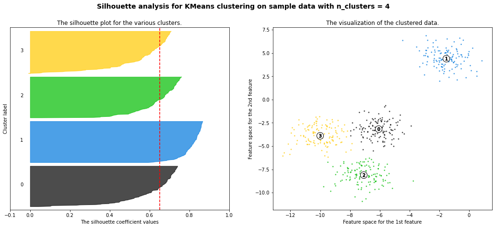
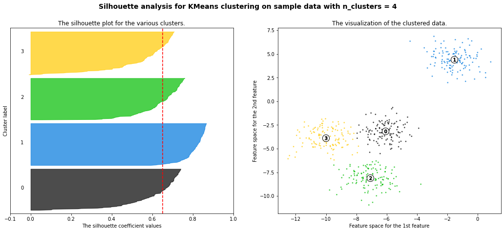

Evaluation Metric¶
Clustering is evaluated based on some similarity or dissimilarity measure such as the distance between cluster points. If the clustering algorithm separates dissimilar observations apart and similar observations together, then it has performed well. There are few evaluation metrics for clustering algorithms viz. Davies-Bouldin Index, Rand index, Silhouette coefficient etc. Here we will explore the Silhouette coefficient.
Silhouette coefficient¶
Silhouette refers to a method of interpretation and validation of consistency within clusters of data. The silhouette value is a measure of how similar an object is to its own cluster (cohesion) compared to other clusters (separation). The silhouette can be calculated with any distance metric, such as the Euclidean distance or the Manhattan distance.
The formula for silhouette coefficient for an instance or data point \(i\) is
where \(a_i\) is the mean distance between \(i\) and all other data points in the same cluster and \(b_i\) is the mean distance to the other data points in the next closest cluster. Thus \(a_i\) is a measure of compactness of \(i\)’s cluster, and \(b_i\) is a measure of distance between the clusters.
We define the silhouette score of a clustering to be the mean silhouette coefficient over all instances or data points.
Score interpretation¶
The silhouette coefficient varies from -1 to +1. A value of +1 means the instance is close to all the members of its cluster, and far from other clusters; a value of 0 means it is close to a cluster boundary; and a value of -1 means it may be in the wrong cluster.
Advantages¶
The score is higher when clusters are dense and well separated, which relates to a standard concept of a cluster.
It can be informative to look at the individual silhouette coefficients, and not just the final mean score.
We can plot these in a silhouette diagram, as shown below, where each colored region corresponds to a different cluster.
The dotted vertical line is the average coefficient.
We can also use the silhouette diagram to look at the size of each cluster, even if the data is not 2d.
Thus, silhouette plots and means may be used to determine the natural number of clusters within a dataset.

Drawbacks¶
The Silhouette Coefficient is generally higher for convex clusters than other concepts of clusters, such as density-based clusters like those obtained through DBSCAN.
The outliers detected in the density-based algorithm will not be assigned to any clusters and this will make a significant difference in the silhouette scores. This metric is sensitive to outliers.
The below code from Scikit Learn demonstrates the Silhouette Coefficient analysis for different number of clusters.
from sklearn.datasets import make_blobs
from sklearn.cluster import KMeans
from sklearn.metrics import silhouette_samples, silhouette_score
import matplotlib.pyplot as plt
import matplotlib.cm as cm
import numpy as np
print(__doc__)
# Generating the sample data from make_blobs
# This particular setting has one distinct cluster and 3 clusters placed close
# together.
X, y = make_blobs(n_samples=500,
n_features=2,
centers=4,
cluster_std=1,
center_box=(-10.0, 10.0),
shuffle=True,
random_state=1) # For reproducibility
range_n_clusters = [2, 3, 4, 5, 6]
for n_clusters in range_n_clusters:
# Create a subplot with 1 row and 2 columns
fig, (ax1, ax2) = plt.subplots(1, 2)
fig.set_size_inches(18, 7)
# The 1st subplot is the silhouette plot
# The silhouette coefficient can range from -1, 1 but in this example all
# lie within [-0.1, 1]
ax1.set_xlim([-0.1, 1])
# The (n_clusters+1)*10 is for inserting blank space between silhouette
# plots of individual clusters, to demarcate them clearly.
ax1.set_ylim([0, len(X) + (n_clusters + 1) * 10])
# Initialize the clusterer with n_clusters value and a random generator
# seed of 10 for reproducibility.
clusterer = KMeans(n_clusters=n_clusters, random_state=10)
cluster_labels = clusterer.fit_predict(X)
# The silhouette_score gives the average value for all the samples.
# This gives a perspective into the density and separation of the formed
# clusters
silhouette_avg = silhouette_score(X, cluster_labels)
print("For n_clusters =", n_clusters,
"The average silhouette_score is :", silhouette_avg)
# Compute the silhouette scores for each sample
sample_silhouette_values = silhouette_samples(X, cluster_labels)
y_lower = 10
for i in range(n_clusters):
# Aggregate the silhouette scores for samples belonging to
# cluster i, and sort them
ith_cluster_silhouette_values = \
sample_silhouette_values[cluster_labels == i]
ith_cluster_silhouette_values.sort()
size_cluster_i = ith_cluster_silhouette_values.shape[0]
y_upper = y_lower + size_cluster_i
color = cm.nipy_spectral(float(i) / n_clusters)
ax1.fill_betweenx(np.arange(y_lower, y_upper),
0, ith_cluster_silhouette_values,
facecolor=color, edgecolor=color, alpha=0.7)
# Label the silhouette plots with their cluster numbers at the middle
ax1.text(-0.05, y_lower + 0.5 * size_cluster_i, str(i))
# Compute the new y_lower for next plot
y_lower = y_upper + 10 # 10 for the 0 samples
ax1.set_title("The silhouette plot for the various clusters.")
ax1.set_xlabel("The silhouette coefficient values")
ax1.set_ylabel("Cluster label")
# The vertical line for average silhouette score of all the values
ax1.axvline(x=silhouette_avg, color="red", linestyle="--")
ax1.set_yticks([]) # Clear the yaxis labels / ticks
ax1.set_xticks([-0.1, 0, 0.2, 0.4, 0.6, 0.8, 1])
# 2nd Plot showing the actual clusters formed
colors = cm.nipy_spectral(cluster_labels.astype(float) / n_clusters)
ax2.scatter(X[:, 0], X[:, 1], marker='.', s=30, lw=0, alpha=0.7,
c=colors, edgecolor='k')
# Labeling the clusters
centers = clusterer.cluster_centers_
# Draw white circles at cluster centers
ax2.scatter(centers[:, 0], centers[:, 1], marker='o',
c="white", alpha=1, s=200, edgecolor='k')
for i, c in enumerate(centers):
ax2.scatter(c[0], c[1], marker='$%d$' % i, alpha=1,
s=50, edgecolor='k')
ax2.set_title("The visualization of the clustered data.")
ax2.set_xlabel("Feature space for the 1st feature")
ax2.set_ylabel("Feature space for the 2nd feature")
plt.suptitle(("Silhouette analysis for KMeans clustering on sample data "
"with n_clusters = %d" % n_clusters),
fontsize=14, fontweight='bold')
plt.show()
Automatically created module for IPython interactive environment
For n_clusters = 2 The average silhouette_score is : 0.7049787496083262
For n_clusters = 3 The average silhouette_score is : 0.5882004012129721
For n_clusters = 4 The average silhouette_score is : 0.6505186632729437
For n_clusters = 5 The average silhouette_score is : 0.56376469026194
For n_clusters = 6 The average silhouette_score is : 0.4504666294372765
 

Sources¶
Machine Learning: A Probabilistic Perspective (Adaptive Computation and Machine Learning) by Kevin P. Murphy